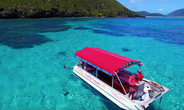

About Us
The family owned and operated business Islander Cruises has been operating for over 27 years on Lord Howe Island, Australia.
Peter originally from Sydney spent his earlier years living on Norfolk Island before coming to Lord Howe in 1989 on a Scuba Diving holiday.
He fell in love with the place and wanted to share the uniqueness and natural beauty of the island to its visitors and to offer all activities from the one place.
Peter has been a Padi Divemaster for over 31 years and is the Owner /Skipper of M.V 'Islander'.

He ha worked closely with numerous Marine biologists, researchers, and Scientists over the years acquiring an extensive knowledge of Lord Howe's Natural History. With many years assisting Professor Peter Harrison and Dr. Andrew Carroll he has been conducting Summer Night Snorkelling tours in the Lagoon to witness the annual Coral Spawning for the last 20 years. As a family run business Peter, wife Vicky and children Brooke and Noah are all strongly connected with the Islander Boatshed and Island community. Vicky now designs an extensive range of prints, artwork and other items inspired by the beauty of their home. Brooke and Noah are both avid snorkelers and PADI divers, obtaining Divemaster and Open Water certificates, respectively.
MV ISLANDER
‘Islander’ is a 6.7m Glass bottomed boat with a 60hp Suzuki 4 stroke outboard engine and is surveyed to hold 27 passengers and 1 crew member. Its features include:

- Two easy access ladders for beach landings and snorkel entry/exit
- Full canopy and zip down clears
- Ample above head dry storage
- Quality gear incl. Mirage masks and Mares fins in all sizes
- Ideal for lagoon cruising